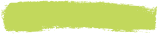

Vores vin
Læs mere om vores udvalg af håndlavede hvidvine – dyrket med passion på Sydfyn
Solaris
Solaris er mere end bare en drue. Som en af de mest anvendte druesorter i dansk vinproduktion er Solaris kendt for sin evne til at modnes tidligt og udvikle en rig smagsprofil, selv i et køligt klima.
Hos Havblink Hvidvin dyrker vi vores Solaris med omhu på de solrige skråninger i det sydfynske landskab. Her trives druen i vores økologiske vinmarker, hvor den får masser af sol og frisk havluft.
Her kan du læse mere om druen, og hvorfor vi dyrker på netop denne.
Smag
Vores hvidvine byder på en palet af friske, levende smagsnoter
Solaris er kendt for sin aromatiske intensitet, der i vores vine udmønter sig i noter af solmoden pære, grønne æbler og et strejf af tropisk frugt. Syren er sprød og velafbalanceret, hvilket skaber en forfriskende og harmonisk smagsoplevelse.
Hver årgang afspejler de unikke vejrforhold i vores sydfynske marker, hvilket giver vores vine deres autentiske karakter. Det er en smagsrejse, hvor friskhed, mineralitet og finesse går op i en højere enhed.
Præmieringer
Hos Havblink Hvidvin er vi stolte af at kunne præsentere vores vine som noget helt særligt. Vores dedikation til bæredygtig dyrkning, respekt for naturen og kompromisløse fokus på kvalitet har ikke kun gjort vores vine populære blandt vores kunder – de er også blevet anerkendt internationalt.
Vi har for eksempel vundet:
Nordic Wine Gold 2024 – Bedste Hvidvin på SolarisTildelt ved Scandinavian Terroir Awards i Stockholm, 2024 – en prestigefyldt konkurrence, der hylder de bedste vine fra kolde klimaer i Nordeuropa.
Vi inviterer dig til at udforske vores prisvindende sortiment og smage, hvorfor Havblinks vine er blevet anerkendt på den internationale scene.